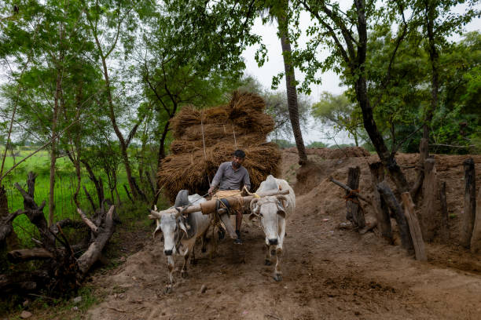
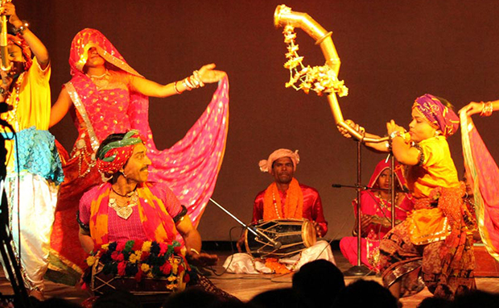
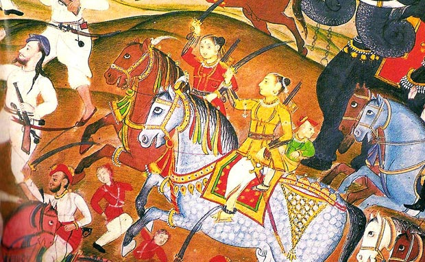
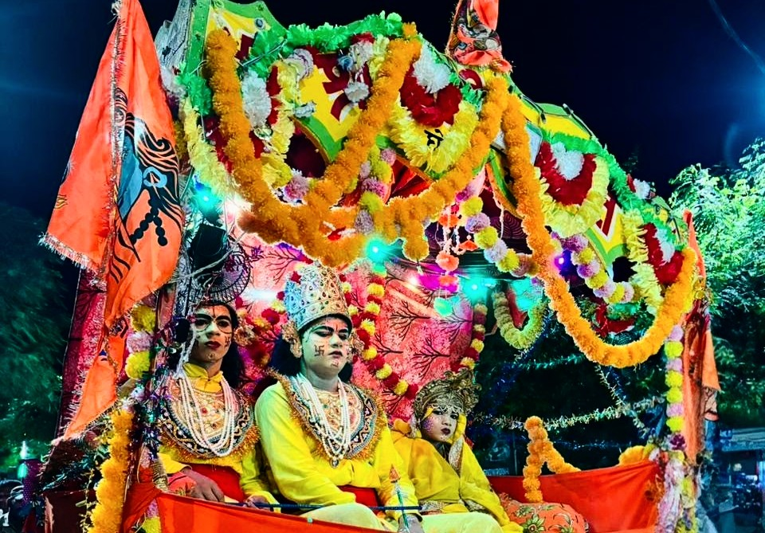

Uttar Pradesh
A Glimpse of the Entire Nation

People
The majority of the people in the Uttar Pradesh are Hindus while a large percentage of the minority practice Islam. There is also a fair number of Sikhs, Jains, Buddhists and Christians in Uttar Pradesh.
Language
Languages prominently spoken in Uttar Pradesh are Hindi, Urdu, Awadhi, Braj, Bhojpuri, Bundelkhandi and English.
Culture
Culture encompasses the way of life of a society. It includes the attitude of the people towards others, their behaviour, mannerisms and ways to celebrate different aspects of life. It also includes the ways in which the people express themselves through fine and performing arts.
Uttar Pradesh's greatest gift to Humanity are the two epics, 'Ramayana' and 'Mahabharata'. From the epic age, the territory of Uttar Pradesh was influenced by several fresh streams of culture among which the two most significant beimg those generated by the teaching of the Buddha and Mahavira, The 24th Jain Tirthankar.
Its people belon to many religions and come from distant parts of the country but have had the latitude to recreate their own native cultures. Afghans, Kashmiris, Bengalis, Parsis and Punjabi Immigrants settled here. Christians, Hindus, Buddhists all found the freedom to practice their religions and pass it on to successive generations.
While it is Secular, liberal and progressive, at the same time it is deeply rooted in social and religious traditions and taboos.



